Chapter 6: Introduction to Inference
Expanded from Statistics_Chapter6_Introduction_to_Inference.pdf (29 pages) · View original handwritten pages
The purpose of statistical inference is to draw conclusions about a wider population from sample data while explicitly accounting for chance variation. This chapter follows all 29 pages of the handwritten notes through the two pillars of formal inference: confidence intervals (estimating the value of an unknown parameter) and tests of significance (assessing the strength of evidence against a claim, including $P$-values, statistical power, and Type I / Type II decision errors).
Prelude: Correcting Intuition with Probability
Our intuitive judgment about "what looks like a real pattern" is easily fooled by random variation:
- Example 6.1 (Comparing Two TV Commercials): Suppose $20$ consumers watch a new TV commercial and $20$ watch the current commercial. In the new-ad group, $12$ of $20$ ($60\%$) express interest in buying the product, versus $8$ of $20$ ($40\%$) in the current-ad group. Is the new commercial genuinely better? A probability calculation shows that even if both ads are equally effective, a difference of $4$ or more buyers out of $20$ occurs about $1\text{ time in }5$ ($20\%$) simply by chance! Because a $20\%$ chance is not rare, the observed gap is easily explained by random assignment.
- Example 6.2 (Clustering in AT&T Daily Trading Volumes): Figure 6.1 below plots daily trading volume for AT&T stock over $90$ trading days around its mean of $33{,}774{,}980$ shares. Are daily trading volumes fluctuating at random around the mean? A formal runs test shows that a clustering of consecutive high-volume and low-volume days as strong as Figure 6.1 would occur only $2.5\%$ of the time by chance—convincing evidence that trading volume is serially correlated rather than random.
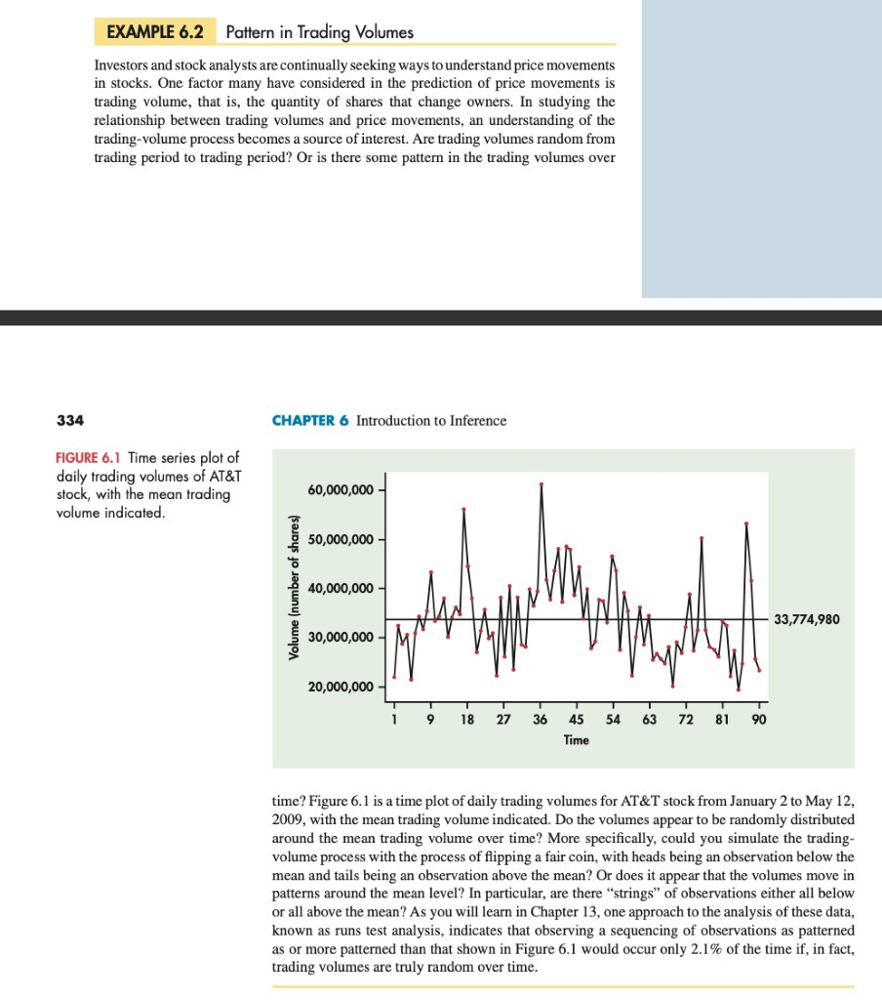
Both confidence intervals and significance tests rest on the sampling distribution of a statistic: they report probabilities that state what would happen if we used the inference method many times.
6.1 Estimating with Confidence
To focus purely on the logic of inference first, this chapter begins with the classical setting where we want to estimate the unknown mean $\mu$ of a population whose standard deviation $\sigma$ is known (or reliably estimated from a very large sample of size $n$, with Chapter 7 dropping the known-$\sigma$ assumption via the $t$ distribution).
The Reasoning of a $95\%$ Confidence Interval
In Example 6.5 (Health Insurance Premiums), the Kaiser Family Foundation surveyed $n = 453$ randomly selected large U.S. firms offering single-coverage HMO plans. The sample mean monthly premium was $\bar{x} = \$405.02$, and the standard deviation was $\sigma \approx s = \$112.08$.
By the Central Limit Theorem (Chapter 4), in repeated simple random samples of size $n = 453$, the sample mean $\bar{x}$ follows approximately the Normal distribution $N(\mu, \sigma/\sqrt{n})$ with standard deviation:
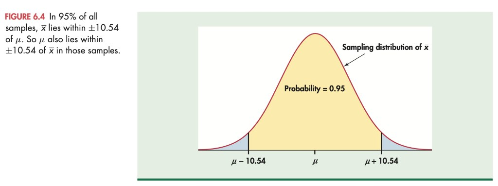
Now follow the three-step geometric equivalence written out on Pages 3, 4, and 6 of the handwritten notes:
- By the $68\text{–}95\text{–}99.7$ rule, the probability is about $0.95$ that $\bar{x}$ lies within $2\sigma_{\bar{x}} = 2(\$5.27) = \$10.54$ of the true population mean $\mu$.
- Distance is symmetric ($|\bar{x} - \mu| \le 10.54 \iff |\mu - \bar{x}| \le 10.54$): To say that $\bar{x}$ lies within $\$10.54$ of $\mu$ is the exact same statement as saying that $\mu$ lies within $\$10.54$ of $\bar{x}$! Even in the boundary case where $\bar{x}$ lands right on the upper edge $\mu + 2\frac{\sigma}{\sqrt{n}}$ or lower edge $\mu - 2\frac{\sigma}{\sqrt{n}}$, the interval $\bar{x} \pm 2\frac{\sigma}{\sqrt{n}}$ still reaches $\mu$ at its endpoint.
- Therefore, in $95\%$ of all possible samples, the random interval $[\bar{x} - 10.54,\; \bar{x} + 10.54]$ will capture the true population mean $\mu$.
$$[\bar{x} - 10.54,\; \bar{x} + 10.54] = [\$405.02 - \$10.54,\; \$405.02 + \$10.54] = \mathbf{[\$394.48,\; \$415.56]}.$$ We say we are $95\%$ confident that the unknown mean monthly HMO premium $\mu$ for all large U.S. firms lies between $\$394.48$ and $\$415.56$.
General Level $C$ Confidence Intervals and Critical Values $z^*$
Every level $C$ confidence interval for a parameter has two parts:
- An interval calculated from the data, almost always of the form:
$$\text{Estimate} \;\pm\; \text{Margin of Error}.$$
- A confidence level $C$ (such as $90\%$, $95\%$, or $99\%$), which states the probability that the interval-construction method will capture the true parameter value in repeated random samples.
To construct a level $C$ confidence interval for a Normal population mean $\mu$, we find the critical value $z^*$ on the Standard Normal $N(0, 1)$ curve such that the central area between $-z^*$ and $+z^*$ equals $C$ (leaving tail area $\frac{1 - C}{2}$ in each of the two outer tails):
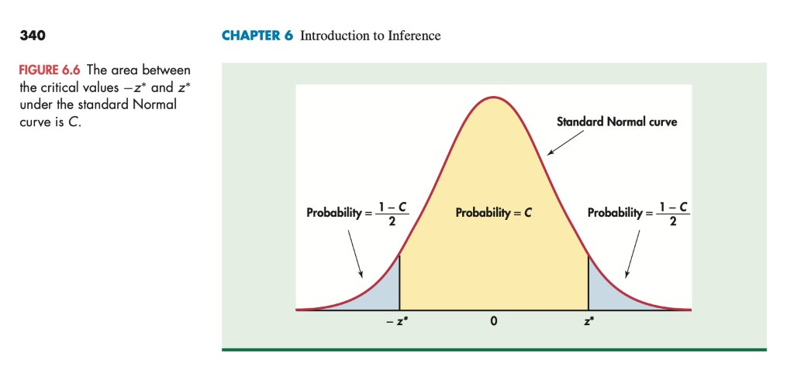
| Confidence Level $C$ | Area in Each Tail $(1 - C)/2$ | Critical Value $z^*$ |
|---|---|---|
| $90\%$ ($0.90$) | $0.050$ | $\mathbf{1.645}$ |
| $95\%$ ($0.95$) | $0.025$ | $\mathbf{1.960}$ (more precise than the empirical rule's $2$) |
| $99\%$ ($0.99$) | $0.005$ | $\mathbf{2.576}$ |
A Government Accountability Office (GAO) study of $n = 292$ randomly selected Chapter 7 consumer bankruptcy filings with attorney representation found a sample mean fee of $\bar{x} = \$1{,}078$ and standard deviation $\sigma \approx s = \$592$. For a $95\%$ confidence interval ($z^* = 1.960$):
$$\text{Margin of error } m = z^*\frac{\sigma}{\sqrt{n}} = 1.960 \times \frac{592}{\sqrt{292}} = \mathbf{\$67.90}.$$ $$\text{95\% Confidence Interval} = \$1{,}078 \pm \$67.90 = \mathbf{(\$1{,}010.10,\; \$1{,}145.90)}.$$
How Confidence Intervals Behave & Sample-Size Planning
We always want high confidence $C$ and a small margin of error $m = z^*\frac{\sigma}{\sqrt{n}}$. Inspecting the formula $m = z^*\frac{\sigma}{\sqrt{n}}$ shows how the three inputs pull on the width of the interval:
- Higher confidence $C$ widens the interval: Demanding $99\%$ confidence ($z^* = 2.576$) instead of $95\%$ confidence ($z^* = 1.960$) on the same $n = 292$ bankruptcy cases increases the margin of error from $\$67.90$ to $2.576 \times \frac{592}{\sqrt{292}} = \mathbf{\$89.20}$ (giving $\$988.80\text{ to }\$1{,}167.20$).
- Smaller sample size $n$ widens the interval: If the GAO had sampled only $n = 100$ cases instead of $n = 292$, the $95\%$ margin of error would jump from $\$67.90$ to $1.960 \times \frac{592}{\sqrt{100}} = \mathbf{\$116.00}$ (giving $\$962\text{ to }\$1{,}194$).
- Smaller $\sigma$ narrows the interval: Reducing measurement noise or restricting attention to a more homogeneous subpopulation shrinks $\sigma$ and narrows $m$.
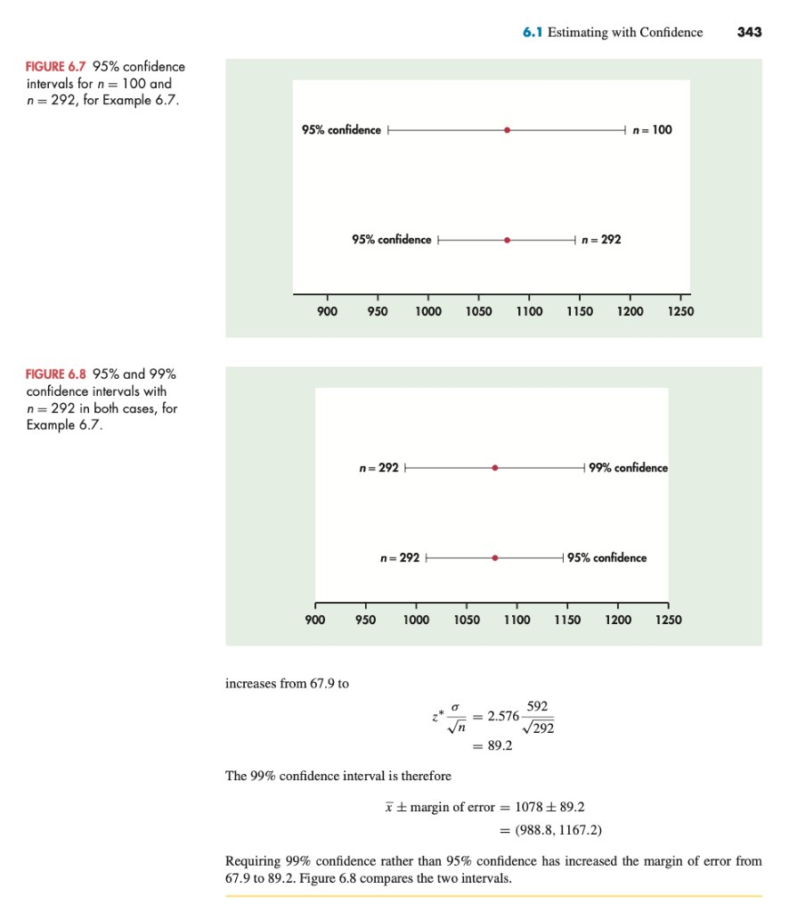
Choosing the Sample Size $n$ for a Desired Margin of Error $m$ (Page 8): Before collecting data, set the margin-of-error formula $z^*\frac{\sigma}{\sqrt{n}}$ equal to your target margin of error $m$ and solve for $n$:
Suppose the GAO wants to estimate mean attorney fees within a margin of error of $m = \$100$ at $95\%$ confidence ($z^* = 1.960$), assuming $\sigma \approx \$592$ from the prior study:
$$n = \left(\frac{z^*\sigma}{m}\right)^2 = \left(\frac{1.960 \times 592}{100}\right)^2 = (11.6032)^2 = \mathbf{134.63}.$$ Because $134$ observations would yield a margin of error slightly wider than $\$100$, always round up to the next higher whole integer: we recommend $\mathbf{n = 135\text{ cases}}$.
Cautions About $\bar{x} \pm z^*\frac{\sigma}{\sqrt{n}}$ and the Bootstrap Check
- What "$95\%$ confidence" does not mean: Once we compute $[\$394.48, \$415.56]$ from our sample, there is no randomness left—the true population mean $\mu$ is a fixed number that is either inside $[\$394.48, \$415.56]$ or outside it. It is incorrect to say "the probability that $\mu$ lies in $[\$394.48, \$415.56]$ is $95\%$"; rather, the interval was produced by a sampling procedure that captures $\mu$ in $95\%$ of all possible random samples.
- Scope of the formula: The formula $\bar{x} \pm z^*\frac{\sigma}{\sqrt{n}}$ requires an SRS (more complex designs like stratified or multi-stage samples have different standard-error formulas), cannot correct for nonresponse or undercoverage bias, and is sensitive to extreme outliers because $\bar{x}$ is not resistant (though for $n \ge 15$ Without extreme outliers, the CLT keeps the sampling distribution of $\bar{x}$ close to Normal).
- Checking Normality with the Bootstrap (Page 10, Example 6.9): When a dataset has skewness or outliers (the $n = 453$ HMO premiums had two high values near $\$1{,}115$ and $\$1{,}185$), we can check our Normal confidence interval without any distributional formula using the bootstrap:
- Treat the observed sample of size $n = 453$ as if it were the population, and draw $1{,}000$ resamples of size $n = 453$ with replacement.
- Compute the sample mean $\bar{x}^*$ for each of the $1{,}000$ resamples.
- Find the middle $95\%$ (between the $2.5\text{th}$ and $97.5\text{th}$ percentiles) of the $1{,}000$ bootstrap means.
6.2 Tests of Significance
While a confidence interval estimates an unknown parameter, a test of significance is a formal procedure for comparing observed data with a hypothesis (a claim about a population parameter) whose truth we want to assess.
The Core Reasoning of a Significance Test
In Case 6.2 (Fill the Bottles — Bestea Bottlers), a bottling line fills bottles of raspberry-flavored green tea whose advertised volume is $\mu_0 = 500\text{ milliliters (ml)}$. Past production shows the fill volume varies Normally with standard deviation $\sigma = 2\text{ ml}$. An inspector measures an SRS of $n = 10$ bottles:
Is $\bar{x} = 501.94\text{ ml}$ ($1.94\text{ ml}$ above target) just ordinary sampling variation across $10$ bottles, or is the machine systematically overfilling? To decide, we ask: "Suppose the true population mean really is $\mu = 500\text{ ml}$. What is the probability of observing a sample mean $\bar{x}$ at least $1.94\text{ ml}$ away from $500\text{ ml}$ purely by chance?"
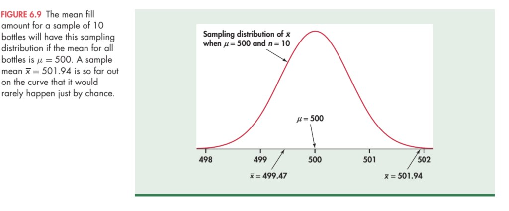
Hypotheses ($H_0, H_a$), Test Statistics, and $P$-Values
- Null Hypothesis ($H_0$): The statement being tested—usually a statement of "no effect," "no difference," or "on target" about a population parameter: $$H_0: \mu = \mu_0 \qquad (\text{e.g., } H_0: \mu = 500).$$
- Alternative Hypothesis ($H_a$): The statement we hope or suspect is true instead of $H_0$:
- Two-sided alternative ($H_a: \mu \neq \mu_0$): Used when departures in either direction (underfilling or overfilling) count as evidence against $H_0$.
- One-sided alternative ($H_a: \mu > \mu_0$ or $H_a: \mu < \mu_0$): Used only when we have a specific direction in mind before seeing the data (for example, $H_a: \mu < 3.8\text{ days}$ in Example 6.12 when testing whether a streamlined workflow reduced order processing time).
- Test Statistic: Measures the compatibility between the null hypothesis $H_0$ and the observed data in standardized units (standard errors):
$$z = \frac{\text{Sample estimate} - \text{Null parameter}}{\text{Standard deviation of sampling distribution}} = \frac{\bar{x} - \mu_0}{\sigma / \sqrt{n}}.$$
- $P$-Value: The probability, computed assuming $H_0$ is true, that the test statistic would take a value as extreme or more extreme (in the direction of $H_a$) than the value actually observed. The smaller the $P$-value, the stronger the evidence against $H_0$ provided by the data.
- Significance Level $\alpha$ and Statistical Significance: If we choose a decisive threshold $\alpha$ (commonly $\alpha = 0.05$ or $\alpha = 0.01$) in advance, and our observed $P\text{-value} \le \alpha$, we reject $H_0$ and say the data are statistically significant at level $\alpha$.
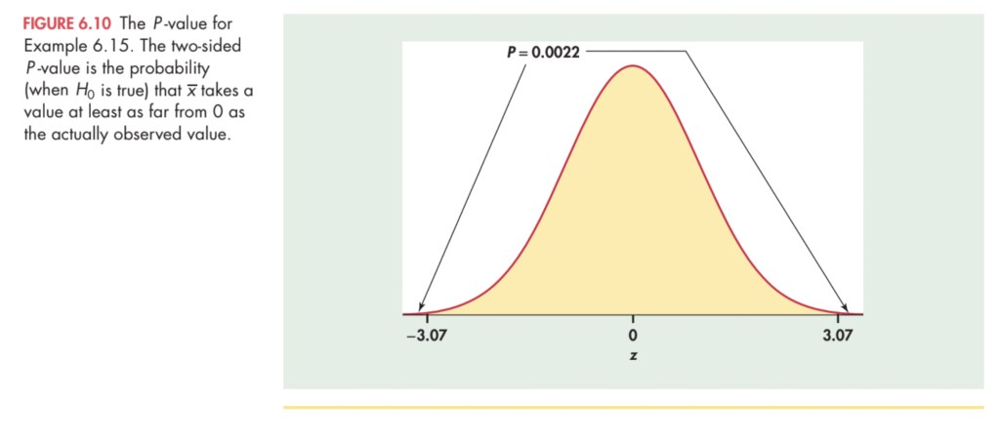
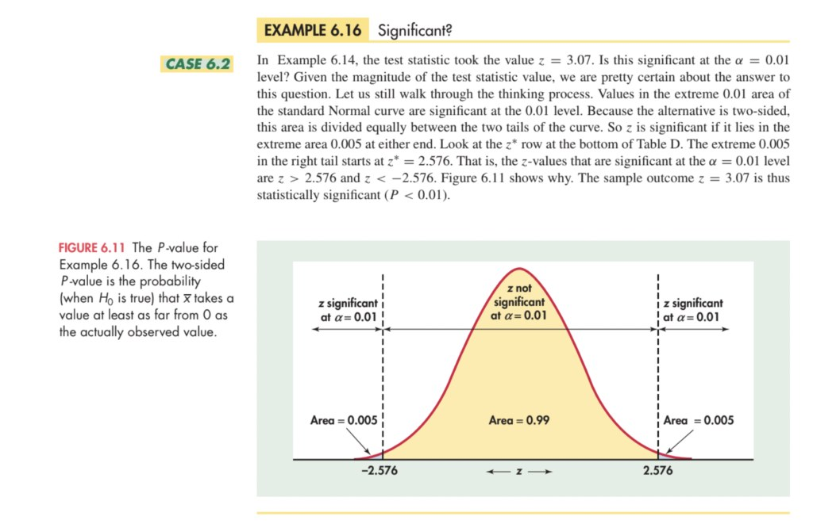
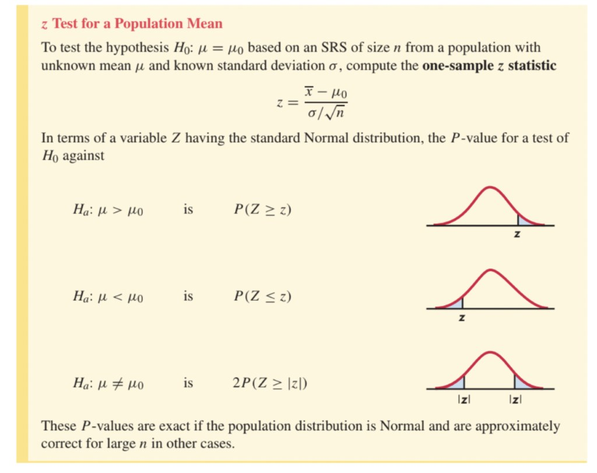
mu0, Ha: mu < mu0, and Ha: mu != mu0." loading="lazy">Four-Step Worked Significance Tests from the Notes
The national mean systolic blood pressure for men aged $35\text{–}44$ is $\mu_0 = 128\text{ mm Hg}$ with $\sigma = 15$. A medical director examines an SRS of $n = 72$ male executives in this age group and finds $\bar{x} = 129.93$. Is this evidence that executives have higher mean blood pressure than the general population?
• Step 1 (Hypotheses): $H_0: \mu = 128$ (no stress effect) versus $H_a: \mu > 128$ (higher blood pressure).
• Step 2 (Test Statistic): $$z = \frac{\bar{x} - \mu_0}{\sigma / \sqrt{n}} = \frac{129.93 - 128}{15 / \sqrt{72}} = \frac{1.93}{1.7678} = \mathbf{1.09}.$$ • Step 3 ($P$-value): For $H_a: \mu > 128$, $$P = P(Z \ge 1.09) = 1 - 0.8621 = \mathbf{0.1379} \quad (13.8\%).$$ • Step 4 (Conclusion): About $14\%$ of the time, an SRS of $72$ men from the general population ($\mu = 128$) would have $\bar{x} \ge 129.93$ purely by chance. Because $P = 0.1379 > 0.05$, we fail to reject $H_0$: the sample is consistent with $\mu = 128$.
Crucial note (Page 18): Failing to find evidence against $H_0$ does NOT prove that $H_0$ is true—it only says the data are consistent with $H_0$.
An SRS of $n = 50$ employees has their blood pressure measured before and one year after a health campaign. The mean change is $\bar{x} = -6\text{ mm Hg}$ (with $\sigma = 20$). Did the campaign reduce average blood pressure?
• Step 1 (Hypotheses): $H_0: \mu = 0$ versus $H_a: \mu < 0$.
• Step 2 (Test Statistic): $$z = \frac{-6 - 0}{20 / \sqrt{50}} = \frac{-6}{2.8284} = \mathbf{-2.12}.$$ • Step 3 ($P$-value): $$P = P(Z \le -2.12) = \mathbf{0.0170}.$$ • Step 4 (Conclusion & Example 6.20): Because $P = 0.0170 \le 0.05$, the reduction is statistically significant at the $\alpha = 0.05$ level (though not at the $\alpha = 0.01$ level, since $0.0170 > 0.01$). In general, the $P$-value is the smallest level $\alpha$ at which the data are significant.
Duality Between Two-Sided Tests and Confidence Intervals
Pages 18–20 establish the exact mathematical link between two-sided significance tests and confidence intervals:
Across $n = 3{,}964$ Initial Public Offerings (IPOs), the mean three-year change in Return on Equity (ROE) was $\bar{x} = -4.29\%$ with standard deviation $s = 15.56\%$. Test $H_0: \mu = 0$ versus $H_a: \mu \neq 0$ at $\alpha = 0.01$:
• Significance test: $$z = \frac{-4.29 - 0}{15.56 / \sqrt{3{,}964}} = \frac{-4.29}{0.2471} = \mathbf{-17.36} \quad \Longrightarrow \quad P = 2\,P(Z \le -17.36) = \mathbf{1.65 \times 10^{-67}} \ll 0.01.$$ • $99\%$ Confidence Interval ($z^* = 2.576$): $$\bar{x} \pm z^*\frac{s}{\sqrt{n}} = -4.29 \pm 2.576\frac{15.56}{\sqrt{3{,}964}} = -4.29 \pm 0.6366 = \mathbf{(-4.927\%,\; -3.653\%)}.$$ Because $\mu_0 = 0$ falls far outside $(-4.927\%, -3.653\%)$, we reject $H_0: \mu = 0$ at $\alpha = 0.01$. Better yet, the confidence interval tells us which values of $\mu$ are plausible (for instance, $H_0: \mu = -3.9\%$ cannot be rejected).
6.3 Use and Abuse of Significance Tests
Pages 20–22 highlight three essential warnings when interpreting $P$-values in research and engineering:
- How small a $P$-value is convincing depends on context: It makes no sense to treat $P = 0.049$ and $P = 0.051$ as night and day. How strong the evidence must be depends on (a) how plausible $H_0$ is a priori, and (b) the cost of acting on a false positive (such as retooling an entire factory).
- Statistical significance is NOT the same as practical significance (Example 6.21): When sample size $n$ is huge, even a tiny, practically meaningless effect becomes "statistically significant." In a sample of $n = 1{,}000$ observations, an observed correlation of just $r = 0.08$ ($r^2 = 0.64\%$) is statistically significant at $\alpha = 0.01$—yet for practical prediction, a correlation of $0.08$ is negligible! Always report a confidence interval alongside a $P$-value so readers can judge the magnitude of the effect.
- Beware searching for significance across multiple tests (Example 6.22 — Multiple Testing): A hospital case-control study found no overall link between cell-phone use and glioma brain cancer. However, when the researchers sliced gliomas into $20$ separate subtypes and ran $20$ significance tests at $\alpha = 0.05$, one rare subtype came back "significant" ($P \le 0.05$). Why is that misleading? When $\alpha = 0.05 = 1/20$, each true null hypothesis has a $1\text{-in-}20$ chance of producing a false positive by luck alone—so running $20$ tests is expected to produce $20 \times \frac{1}{20} = 1$ false alarm even when cell phones have zero effect on any glioma!
6.4 Statistical Power, Type I & Type II Errors, and the ML Confusion Matrix
A significance test with a tiny $\alpha$ is useless if the sample size is so small that the test almost never detects a real effect when $H_0$ is actually false. We measure a test's sensitivity using its power:
Three-Step Power Calculations (One-Sided and Two-Sided)
Let us trace the handwritten notes' three-step recipe on Example 6.23 (Exercise and Bone Mineral Content): researchers plan a $6\text{-month}$ exercise study on $n = 25$ young women to test whether exercise increases total body bone mineral content (TBBMC, where $\sigma = 2\%$). A gain of $\mu = 1\%$ is considered clinically important. What is the power of a one-sided $\alpha = 0.05$ test to detect $\mu = 1\%$ with $n = 25$ subjects?
- Step 1 — State $H_0$, $H_a$, $\alpha$, and the specific alternative $\mu$: $$H_0: \mu = 0, \qquad H_a: \mu > 0, \qquad \alpha = 0.05, \qquad \text{specific alternative } \mu = 1.$$
- Step 2 — Find the values of $\bar{x}$ that lead us to reject $H_0$: Under $H_0$, the test rejects at $\alpha = 0.05$ when $z \ge 1.645$. Translate that cutoff back into units of $\bar{x}$:
$$z = \frac{\bar{x} - 0}{2 / \sqrt{25}} \ge 1.645 \quad \Longleftrightarrow \quad \frac{\bar{x}}{0.4} \ge 1.645 \quad \Longleftrightarrow \quad \mathbf{\bar{x} \ge 0.658}.$$
- Step 3 — Calculate the probability of observing $\bar{x} \ge 0.658$ when the alternative $\mu = 1$ is true: Standardize $\bar{x} = 0.658$ using the alternative mean $\mu = 1$:
$$\text{Power} = P(\bar{x} \ge 0.658 \mid \mu = 1) = P\!\left(\frac{\bar{x} - 1}{2/\sqrt{25}} \ge \frac{0.658 - 1}{0.4}\right) = P(Z \ge -0.855) = \mathbf{0.80} \quad (80\%).$$
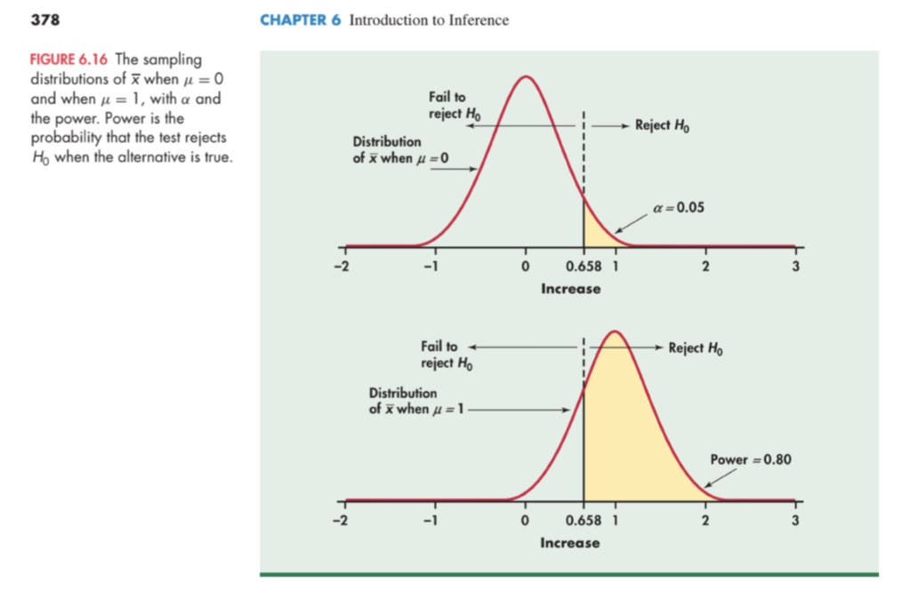
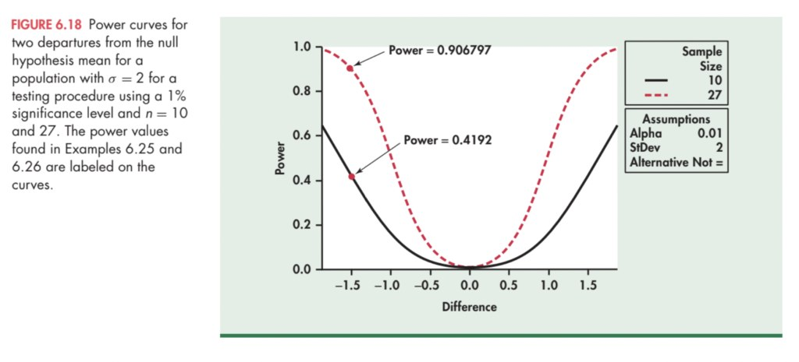
Four Ways to Increase the Power of a Test (Page 24):
- Increase $\alpha$: A $5\%$ test has a larger rejection region—and therefore higher power—than a $1\%$ test.
- Consider an alternative $\mu$ farther from $\mu_0$: Large departures from $H_0$ are much easier to detect than tiny departures.
- Increase the sample size $n$: Narrowing $\sigma/\sqrt{n}$ separates the null and alternative sampling distributions.
- Decrease $\sigma$: Improving measurement precision or using a matched-pairs/block design reduces noise $\sigma$.
Type I Error, Type II Error, and the Machine Learning Confusion Matrix
When we use a fixed significance level $\alpha$ as a binary decision rule (Reject $H_0$ vs. Accept / Fail to reject $H_0$), two distinct kinds of mistakes are possible:
- Type I Error: We reject $H_0$ (choose $H_a$) when in fact $H_0$ is true. The probability of a Type I error is exactly the significance level $\alpha$: $$\alpha = P(\text{Type I Error}) = P(\text{Reject } H_0 \mid H_0 \text{ is true}).$$
- Type II Error: We fail to reject $H_0$ (accept $H_0$) when in fact $H_a$ is true. For any specific alternative parameter value, the probability of a Type II error ($\beta$) is the complement of the power: $$\beta = P(\text{Type II Error}) = 1 - \text{Power}, \qquad \text{Power} = 1 - \beta.$$
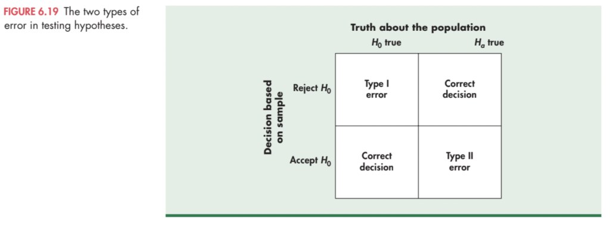
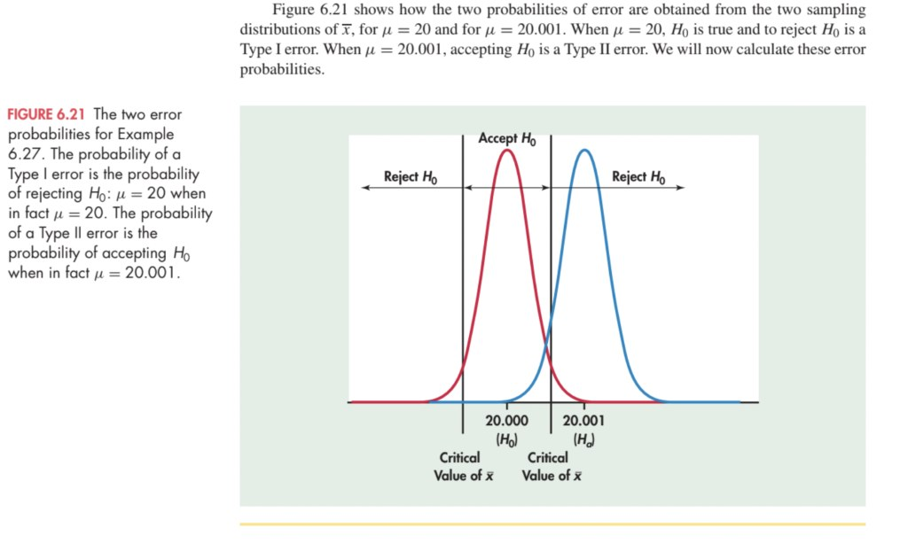
- Negative Class ($-$, Class $0$: healthy patient / non-spam email) $\Longleftrightarrow$ Null Hypothesis $H_0$ (no disease / no anomaly).
- Positive Class ($+$, Class $1$: patient has disease / spam email) $\Longleftrightarrow$ Alternative Hypothesis $H_a$ (effect is present).
| Decision / Prediction | Truth: Positive ($+$, $H_a$ True) | Truth: Negative ($-$, $H_0$ True) |
|---|---|---|
| Predict $+$ (Reject $H_0$) | True Positive (TP) — Correct detection ($\text{Power} = \text{Recall / TPR}$) | False Positive (FP) = Type I Error ($H_0$ was true, but we chose $H_a$; rate $= \alpha = \text{FPR}$) |
| Predict $-$ (Accept $H_0$) | False Negative (FN) = Type II Error ($H_a$ was true, but we failed to reject $H_0$; rate $= \beta = \text{FNR}$) | True Negative (TN) — Correct non-rejection ($\text{Specificity} = 1 - \alpha$) |
From the Handwritten Notes
Open the original handwritten page scans from Statistics_Chapter6_Introduction_to_Inference.pdf below:
View original page 5 — Critical values $z^*$ ($1.645, 1.960, 2.576$) & the confidence interval formula

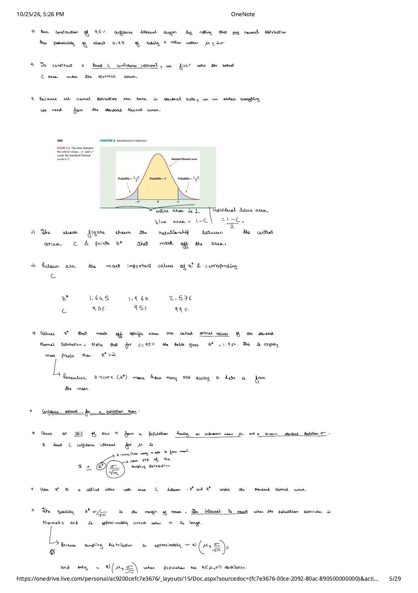
View original page 6 — Geometric proof of why $\bar{x} \pm 2\frac{\sigma}{\sqrt{n}}$ captures $\mu$ $95\%$ of the time

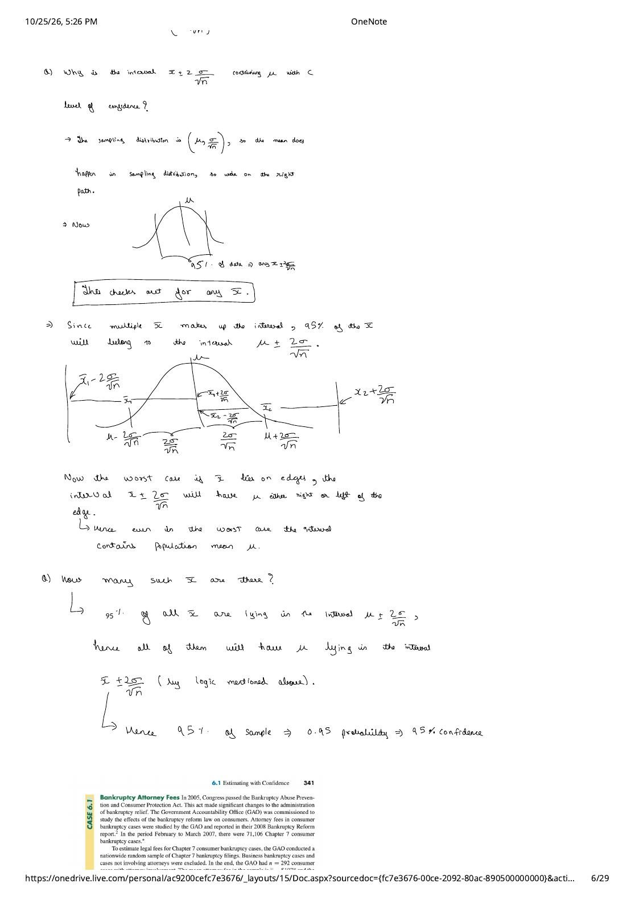
View original page 8 — Margin of error behavior & sample size formula $n = (z^*\sigma / m)^2$

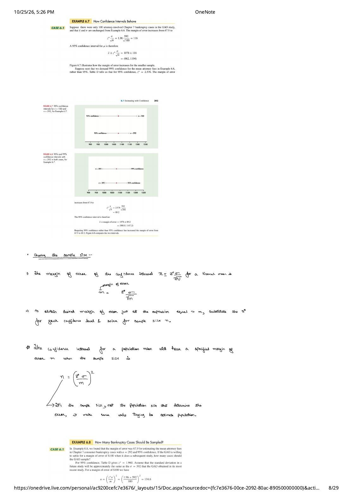
135).">View original page 15 — Defining the $P$-value & computing a two-tailed $P$-value ($0.0022$)

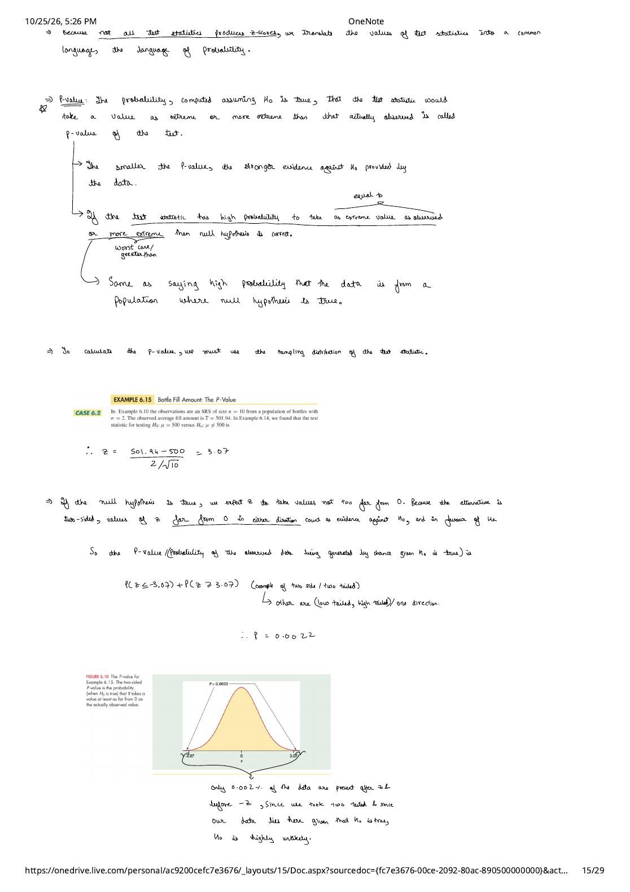
= 3.07) = 0.0022 for the Bestea bottle-filling test.">View original page 24 — Power calculation ($0.80$) & the four ways to increase power

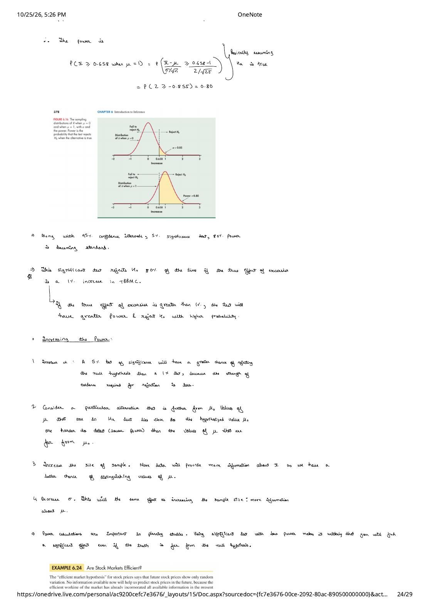
= -0.855) = 0.80 and listing the 4 ways to increase statistical power.">View original page 27 — Type I (FP) and Type II (FN) errors in the ML confusion matrix

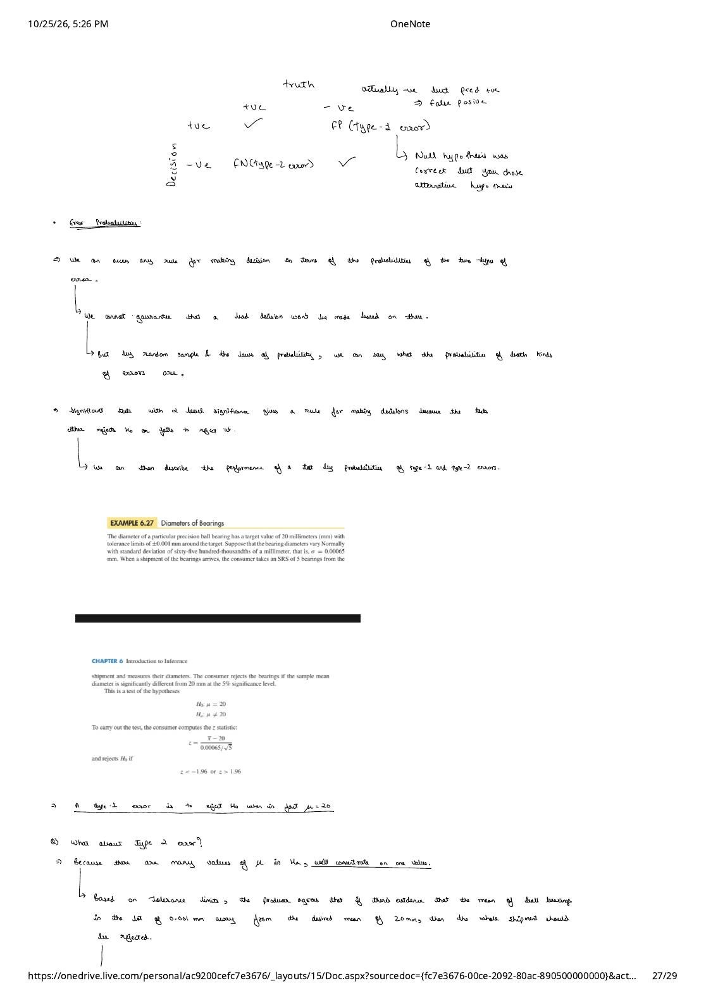